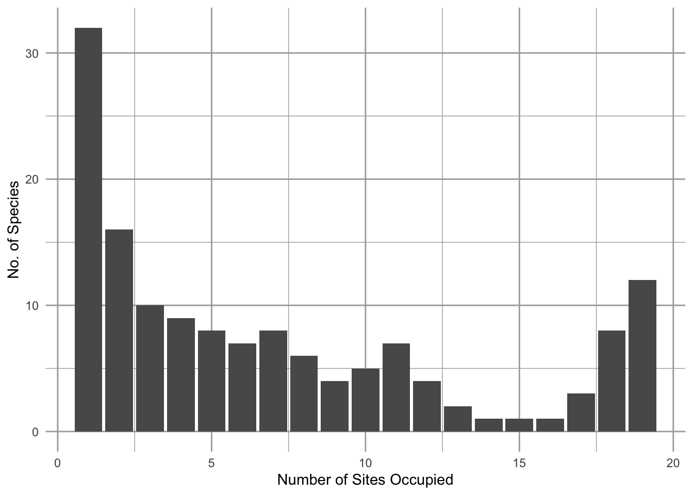
7 Populations in Space
Over relatively large spatial scales, it is not unusual to have some species that seem to occur everywhere, and many species that are found in only one or a few locations. For example, Scott Collins and Susan Glenn (Collins and Glenn 1991) showed that in grasslands, each separated by up to 4\(\,\)km, there were more species occupying only one site (Figure 7.1, left-most bar) than two or more sites, and also that there are more species occupying all the sites than most intermediate numbers of sites (Figure 7.1, right-most bar), resulting in a U-shaped frequency distribution. Illke Hanski (Hanski 1982) coined the rare and common species “satellite” and “core” species, respectively, and proposed an explanation. Part of the answer seems to come from the effects of immigration and emigration in a spatial context. In this chapter we explore mathematical representations of individuals and populations in space, and we investigate the consequences for populations and collections of populations.
7.1 Source-sink Dynamics
In Chapters 3-5, we considered closed populations. In contrast, one could imagine a population governed by births plus immigration, and deaths plus emigration (a BIDE model). Ron Pulliam (Pulliam 1988) proposed a simple model that includes all four components of BIDE which provides a foundation for thinking about connected subpopulations. We refer to these simple models as source-sink models. Among the many examples of real populations with characteristics of source-sink models are,
- subpopulations of passerine birds that inhabit low quality forest patches in part because of immigration from high quality forest patches (Robinson et al. 1995; Dononvan et al. 1995), and
- understory palms that inhabit distinct microhabitats in which seeds move from high to low quality patches (Berry et al. 2008).
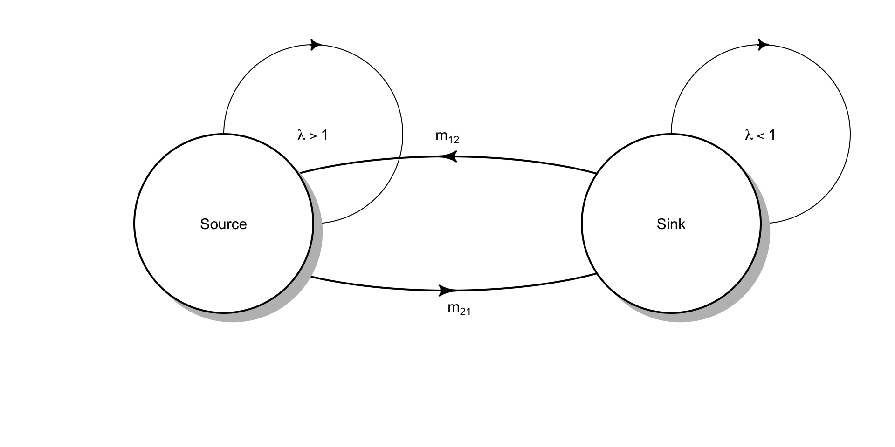
The concept of source-sink populations begins with the assumption that spatially separated subpopulations occupy distinct patches, which each have their own intrinisic dynamics due to births and deaths (Figure 7.2). We can characterize each subpopulation, \(i\) with its own population growth rate, \(\lambda_i\). In addition, individuals migrate between patches. As a result, the number of individuals we observe in a particular patch is due to both internal dynamics of births and deaths, and also migration.
Source populations are those with more births than deaths (\(\lambda > 1\)) and with more emigration than immigration. Sink populations are those with fewer births than deaths (\(\lambda < 1\)) and with more immigration than emigration.
Because of the importance of \(\lambda\), we often refer to the quality of a patch insofar as it influences \(\lambda\). High quality patches have are those patches with high growth rates (\(\lambda>1\)), whereas low quality patches are those with low growth rates (\(\lambda < 1\)). We might also study factors associated with growth rate, such as the frequency of nesting sites, predator densities, soil fertility, or any factor that we believe would regulate growth rates.
Pulliam (Pulliam 1988) envisioned two bird populations in which we can track adult reproduction, adult and juvenile survival, and estimate \(\lambda_i\) separately for each population. If we model the two populations separately, as if they are unconnected by dispersal, the size of the source population at time \(t+1\) is \(n_{1,t+1}\), so it is the result of just survival and fecundity. Adult survival is \(P_A\), and fecundity results from reproduction by adults, \(\beta_1 n_{1,t}\), times survival of the juveniles \(P_J\). The sink population could be modeled the same way. \[ \begin{aligned} n_{1, t+1} &= P_A n_{1,t} + \beta_1 n_{1,t}P_J = \lambda_1 n_1\\ n_{2, t+1} &= P_A n_{2,t} + \beta_2 n_{2,t}P_J = \lambda_2 n_2 \end{aligned} \tag{7.1}\]
When he connected this two population via dispersal, Pulliam then assumed that
- the two populations vary only in fecundity (\(\beta\)), which created differences in growth rates, such that \(\lambda_1 > 1 > \lambda_2\), and critically,
- birds in excess of the number of territories in the source population emigrated from the source habitat to the sink habitat, \(m_{21} = \lambda_1 - 1\).
Key result: These assumptions result in the source population maintaining a constant density, while all the excess fecundity migrates to the sink population.
Here, we use a matrix to represent transitions between the two populations as well as changing abundance in each population (e.g., Berry et al. 2008). We place each rate in the respective element in a two-stage projection matrix. We assume a pre-breeding census, in which we count only adults. The population dynamics would thus be governed by :
\[ \mathbf{A} = \left( \begin{array}{cccc} P_{A1} + P_{J1}\beta_1 & M_{12} \\ M_{21} & P_{A2} +P_{J2}\beta_2 \end{array} \right) \tag{7.2}\] where the upper left element (row 1, column 1) reflects the within-patch growth characteristics for patch 1. The lower right quadrant (row 2, and column 2) reflects the within-patch growth characteristics of patch 2. The anti-diagonal elements (\(a_{1,2}\), \(a_{2,1}\)) represent migration.
Source-sink models assume net migration flows from the source to the sink (\(M_{21}>M_{12}\)) – hence the names. We will assume, for simplicity, that migration is exclusively from the source to the sink (\(M_{21}>0\), \(M_{12}=0\)). We further assume that \(\lambda_1 > 1\) but all excess individuals migrate to patch 2, so \(M_{21} = \lambda_1 - 1>0\). Then simplifies to
\[ \mathbf{A} = \left( \begin{array}{cccc} 1 & 0 \\ \lambda_1-1 & \lambda_2 \\ \end{array} \right) \tag{7.3}\]
In this code, we first assign \(\lambda\) for the source and sink populations, and create a matrix.
lambda1 <- 1.2; lambda2 <- .4
A <- matrix(c(1, 0,
lambda1-1, lambda2), nrow=2, byrow=TRUE)
A [,1] [,2]
[1,] 1.0 0.0
[2,] 0.2 0.4We can then use eigenanalysis, as we did in Section 5.6.1 for stage structured populations. The dominant eigenvalue will provide the long term asymptotic total population growth. We can calculate the stable stage distribution, which in this case is the distribution of individuals between the two habitats.
eA <- eigen(A)
eA$values[1] 1.0 0.4# calculate the stable stage distr.
(ssd <- eA$vectors[,1]/sum(eA$vectors[,1]) )[1] 0.75 0.25From the dominant eigenvalue, we see Pulliam’s working assumption that the total population growth (for the two popuations combined) is \(\lambda=1\). Upon calculating the stable distribution, we also see that the source population contains more individuals than the sink population. Remember also that the fraction in the sink population comes from both growth in the sink population and migration.
Pulliam explored the consequences of these assumptions for the relative abundances in the two populations. He varied \(\lambda_1\) over a range of values and calculated the relative abundance of the source population. Here, we let p1 be the proportion of the total population in the source.
# a range of lambdas
lambda1 <- seq(1, 3, by=0.01)
# proportion of total N in the source habitat
p1 <- sapply(lambda1, function(l1) {
# replace lambda1
A[2,1] <- l1-1
# extract the dominant eigenvalue
dom.ev <- eigen(A)$vectors[,1]
# calculate the relative abundance of the first pop.
dom.ev[1]/sum(dom.ev)
})
# plot the result
ggplot() + geom_line(aes(x=lambda1, y=p1) ) +
labs(y="Fraction of total population\n in the source population",
x=expression(lambda[1]) ) 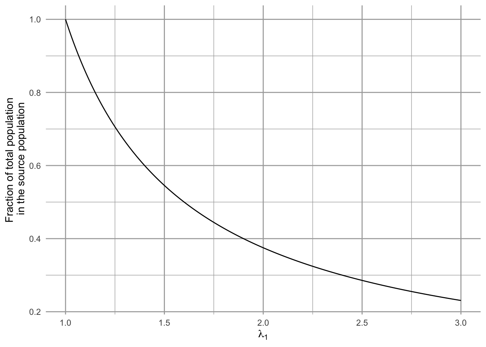
This illustrates one of his main theoretical findings, that relative abundance and population density can be misleading indicators of habitat quality (Figure 7.3). If we assume that excess individuals in the source migrate to the sink, then as habitat quality and reproduction increase in the source population, the source population comprises an ever decreasing proportion of the total population! That is, as \(\lambda_1\) gets larger, \(n_1/(n_1+n_2)\) gets smaller. Thus, density can be a very misleading predictor of long-term population viability, if the source population is both productive and exhibits a high degree of emigration.
7.1.1 Complications and cases
Pseudosinks and ecological traps are special cases with counterintuitive dynamics. Pseudosinks are patches in which immigration is so high that it pushes the subpopulation over its carrying capacity and depresses growth rates (e.g., Breininger and Oddy 2004). In the absence of immigration, population growth rates would sustain the population (\(\lambda > 1\)), but high immigration increases population size which suppresses lambda in a negative density-depndent manner. Ecological traps are habitats that are preferred by animals, but are actually low quality (\(\lambda < 1\)). These actually can occur, especially in the face of human-induced rapid environmental change. In many cases, there is a mismatch between sensory traits of organisms and novel environments (Robertson et al. 2013). Literally, like a moth to a flame.
Ideal free and despotic distributions are two types of distributions of individuals among patches. For both types, we assume that the quality of unoccupied habitats varies among patches. We also assume that individuals have negative effects on quality, for example, through territory occupation or resource use – a common example of negative density dependence. This means that current habitat quality depends on the original quality of unoccupied habitat and the also the number of occupants.
Under the above circumstances, an ideal free distribution of individuals among patches results when individuals distribute themselves in perfect proportion to habitat quality. The net result is that all current patches have equal quality because high quality patches suffer from proportionally more individuals.
In contrast, an ideal despotic distribution arises when individuals always prefer habitat that has higher original quality, until the habitat is full, at which point they use low quality habitat. This is thought to occur where animals are territorial, and prefer the better habitat as long as there is a single territory available.
As our last special case, balanced dispersal arises when migration occurs at similar rates among patches of similar quality (\(\lambda \approx 1\)) but where patches vary in size and population size. This results in the unexpected observation that migration from small patches with few individuals into large patches occurs nearly as often as the reverse. This means that per capita emigration rates are higher for small patches than large patches. It is not clear why this occurs, but it could occur if the higher edge:area ratio of smaller patches boosts migration rate (Hambäack et al. 2007) and the evolution of dispersal characteristics in populations of different sizes (Legrand et al. 2017; McPeek and Holt 1992).
7.2 Metapopulations
The logistic model (Section 6.2) is all well and good, but it has no concept of space built into it. In many, and perhaps most circumstances in ecology, space has the potential to influence the dynamics of populations and ecosystem fluxes (Lehman and Tilman 1997; Leibold et al. 2004; Loreau et al. 2003). The logistic equation represents a closed population, with no clear accounting for emigration or immigration. In particular cases, however, consideration of space may be essential. What will we learn if we start considering space, such that sites are open to receive immigrants and lose emigrants?
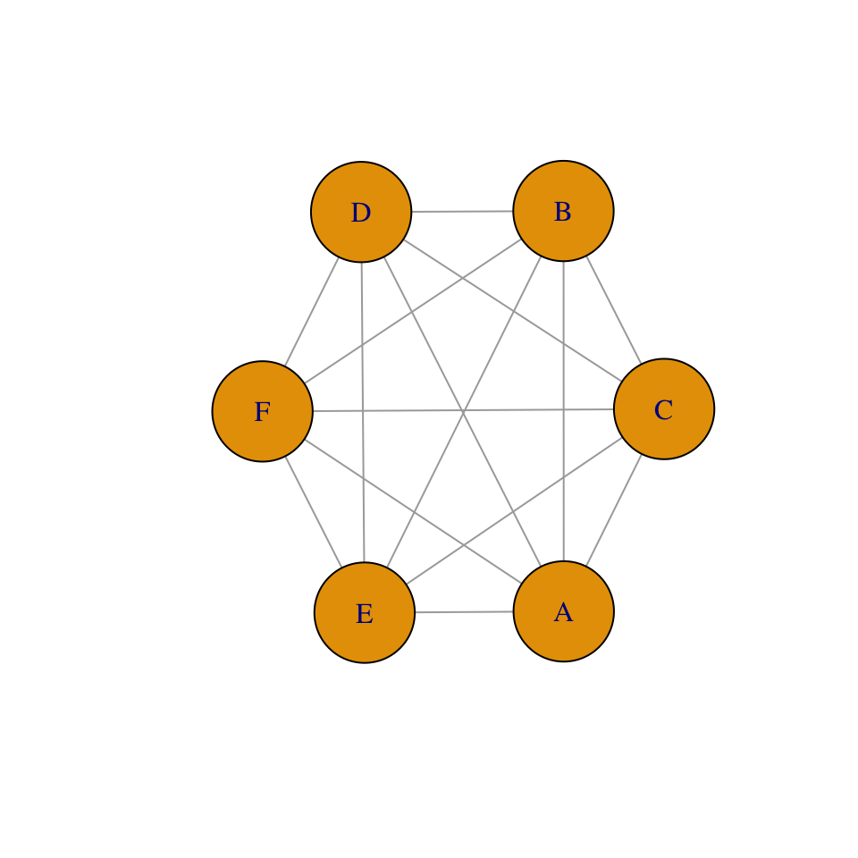
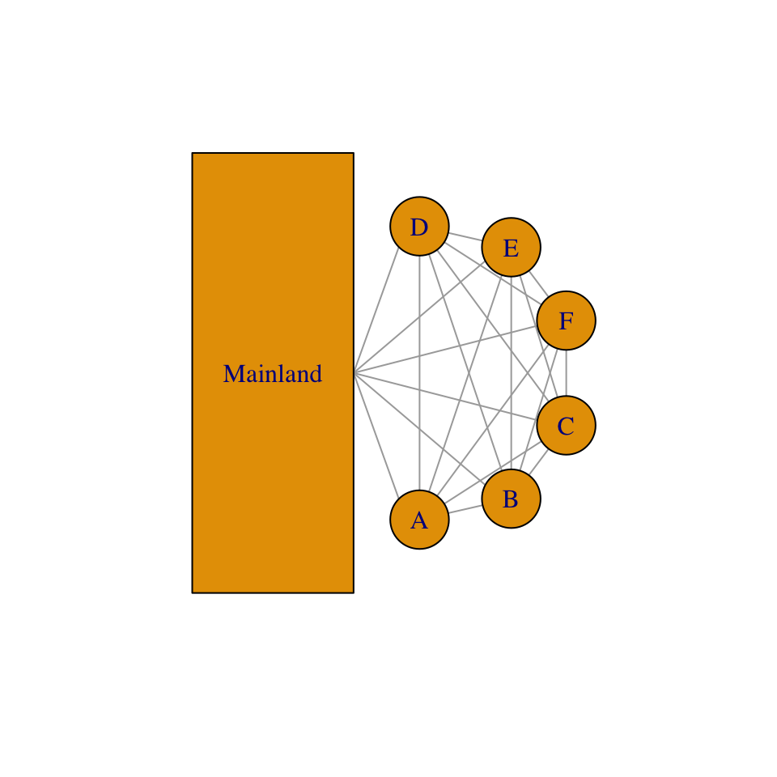
A metapopulation is a population of populations (Figure 7.4). Modeling metapopulations emerged from work in pest management when Levins (1969) wanted to represent the dynamics of the proportion of fields infested by a pest. He assumed that a field was either occupied by the pest, or not. In this framework, we keep track of the proportion of all populations that remain occupied. He assumed that the metapopulation is closed, in the sense that all migration occurs there exists a finite number of sites which may exchange migrants.
Whether we consider a single spatial population, or single metapopulation, we can envision a collection of sites connected by dispersal. Each site may be a small spot of ground that is occupied by a plant, or it may be an oceanic island that is occupied by a population. All we know about a single site is that it is occupied or unoccupied. If the site is occupied by an individual, we know nothing of how big that individual is; if the site is occupied by a population, we know nothing about how many indiviuals are present. The models we derive below keep track of the proportion of sites that are occupied. These are known loosely as metapopulation models. Although some details can differ, whether we are modeling a collection of spatially discrete individuals in single population or a collection of spatially discrete populations, these two cases share the idea that there are a collection of sites connected by migration, and each is subject to extinction.
The most relevant underlying biology concerns colonization and extinction in our collection of sites (Figure 7.4). In this chapter, we will assume that all sites experience equal rates. In the one model, we assume that the collection of sites receives propagules from the outside, from some external source that is not influenced by the collection of sites (Figure 7.4). In all cases, we will consider how total rates of colonization, \(C\), and extinction, \(E\), influence the the rate of change of \(p\), the proportion of sites that are occupied, \[\frac{dp}{dt}=C-E.\] We will consider below, in a somewhat orderly fashion, several permutations of how we represent colonization and extinction of sites (Gotelli and Kelley 1993; Gotelli 1991).
7.2.1 The classic Levins model
Levins (1969) proposed what has become the classic metapopulation model, \[ \frac{dp}{dt} = c_{i}p\left(1-p\right) - ep \tag{7.4}\] This equation describes the dynamics of the proportion, \(p\), of a set of fields invaded by a pest. The pest colonizes different fields at a total rate governed by the rate of propagule production, \(c_i\), and also on the proportion of patches that contain the pest, \(p\). Thus, propagules are being scattered around the landscape at rate \(c_i p\). We use the subscript \(i\) to remind us that the colonization is coming from within the sites that we are studying (i.e. internal colonization).
The rate at which \(p\) changes is also related to the proportion of fields that are unoccupied, \((1-p)\), and are therefore available to become occupied and increase \(p\). The total rate of colonization is \(c_ip(1-p)\). The pest has a constant local extinction rate \(e\), so the total extinction rate in the landscape is \(ep\).
The parameters \(c_i\) and \(e\) are very similar to \(r\) of continuous logistic growth, insofar as they are dimensionless instantaneous rates. However, they are sometimes thought of as probabilities. The parameter \(c_i\) is approximately the proportion of open sites colonized per unit time. For instance, if we created or found 100 open sites, we could come back in a year and see how many became occupied over that time interval of one year, and that proportion would be a function of \(c_i\). The parameter \(e\) is often thought of as the probability that a site becomes unoccupied per unit time. If we found 100 occupied sites in one year, we could revisit them a year later and see how many became *un}occupied over that time interval of one year.
With internal colonization, we are modeling a closed spatial population of sites, whether “site” refers to an entire field (as above), or a small patch of ground occupied by an individual plant (Tilman and Downing 1994).
The Levins metapopulation model: An R function for a differential equation requires arguments for time, a vector of the state variables (here we have one state variable, \(p\)), and a vector of parameters.
levins <- function(t, y, parms) {
p <- y[1]
with(as.list(parms), {
dp <- ci * p * (1-p) - e * p
return(list(dp))
}) }By using with, we can specify the parameters by their names, as long as parms includes names. The function levins() returns a list that contains a value for the derivative, evaluated at each time point, for each state variable (here merely \(dp /dt\)). We then use levins in the numerical integration function ode in the deSolve package.
prms <- c(ci=0.15, e=0.05)
Initial.p <- 0.01
out.L <- data.frame(ode(y=Initial.p, times=1:100, func=levins, parms=prms ))We then plot the result (Figure 7.5).
qplot(x=out.L[,1], y=out.L[,2], geom="line", ylim=c(0,1), ylab="p", xlab="time") +
annotate("text", 25, .75, label=as.expression(bquote(over(dp,dt)==cp(1-p)-ep)))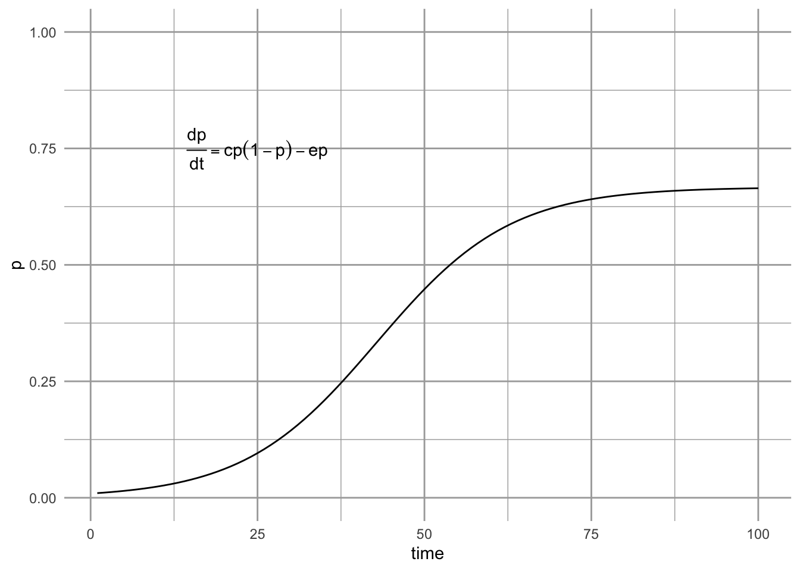
Can we use this model to predict the eventual equilibrium? Sure — we just set Equation 7.4 to zero and solve for \(p\). This model achieves and equilibrium at, \[ \begin{aligned} 0 &=c_{i}p-c_{i}p^2 - ep\\ p^* &= \frac{c_{i}-e}{c_{i}}=1-\frac{e}{c_{i}}. \end{aligned} \tag{7.5}\] When we do this, we see that \(p^* > 0\) as long as \(c_i > e\) (e.g., Figure 7.5). When is \(p^* = 1\), so that all the sites are filled? In principle, all sites cannot be occupied simultaneously unless \(e=0\).
7.2.2 Propagule rain
From where else might propagules come? If a site is not closed off from the rest of the world, propagules could come from outside the collection of sites that we are actually monitoring.
For now, let us assume that our collection of sites is continually showered by propagules from an external source. If only those propagules are important, then we could represent the dynamics as, \[ \frac{dp}{dt} = c_{e}\left(1-p\right) - ep \tag{7.6}\] where \(c_{e}\) specifies the rate of colonization coming from the external source. Gotelli (1991) refers to this model as a metapopulation model with propagule rain, or as the island–mainland model. He calls it this because it describes a constant influx of propagules which does not depend on the proportion, \(p\), of sites occupied for propagule production. Extinction here is mediated only by the proportion of sites occupied, and has a constant per site rate.
The propagule rain metapopulation model: An R function for a differential equation requires arguments for time, a vector of the state variables (here we have one state variable, \(p\)), and a vector of parameters.
gotelli <- function( t, y, parms) {
p <- y[1]
with(as.list(parms), {
dp <- ce * (1-p) - e * p
return(list(dp))
})
}
prms <- c(ce=0.15, e=0.05)
Initial.p <- 0.01
out.G <- data.frame(ode(y=Initial.p, times=1:100, func=gotelli, parms=prms ))We then plot the result (Figure 7.6).
qplot(x=out.G[,1], y=out.G[,2], geom="line", ylim=c(0,1), ylab="p", xlab="time") +
annotate("text", 50, .25, label=as.expression(bquote(over(dp,dt)==c[e](1-p)-ep)))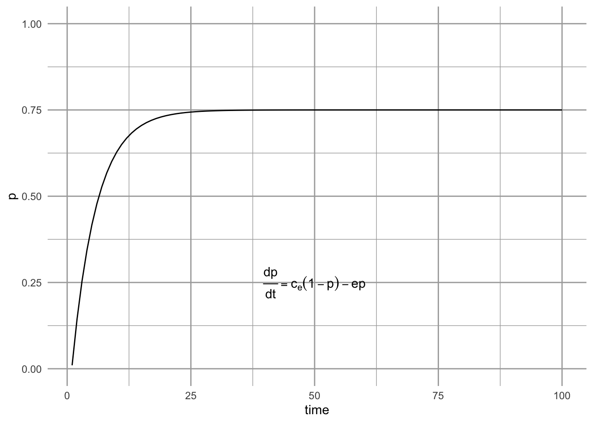
We can solve for this model’s equilibrium by setting eq. Equation 7.6 equal to zero. \[\begin{align*} 0 &= c_{e}-c_{e}p - ep\\ p^*&=\frac{c_{e}}{c_{e}+e}. \end{align*}\]
Of course, we might also think that both internal and external sources are important, in which case we might want to include both sources in our model, \[ \begin{aligned} \frac{dp}{dt} &= (c_{i}p+c_{e})\left(1-p\right) - ep \end{aligned} \tag{7.7}\] As we have seen before, however, adding more parameters is not something we take lightly. Increasing the number of parameters by 50% could require a lot more effort to estimate.
7.2.3 The rescue effect and the core-satellite model
Thus far, we have ignored what happens between census periods. Imagine that we sample site “A” each year on 1 January. It is possible that between 2 January and 31 December the population at site A becomes extinct and then is subsequently recolonized, or “rescued” from extinction. When we sample on 1 January in the next year, we have no way of knowing what has happened in the intervening time period. We would not realize that the population had become extinct and recolonization had occurred.
We can, however, model total extinction rate \(E\) with this rescue effect, \[ E = - ep\left( 1-p \right). \tag{7.8}\] Note that as \(p \rightarrow 1\), the total extinction rate approaches zero. Total extinction rate declines because as the proportion of sites occupied increases, it becomes increasingly likely that dispersing propagules will land on all sites. When propagules happen to land on sites that are on the verge of extinction, they can “rescue” that site from extinction.
Brown and Kodric-Brown (1977) found that enhanced opportunity for immigration seemed to reduce extinction rates in arthropod communities on thistles. They coined this effect of immigration on extinction as the rescue effect. MacArthur and Wilson (1963) also discussed this idea in the context of island biogeography. We can even vary the strength of this effect by adding yet another parameter \(q\), such that the total extinction rate is \(-ep\left( 1-qp \right)\) (Gotelli and Kelley 1993).
Assuming only internal propagule supply and the simple rescue effect results in what is referred to as the the core-satellite model, \[ \begin{aligned} \frac{dp}{dt} &= c_ip\left(1-p\right) - ep\left( 1-p \right) \end{aligned} \tag{7.9}\] This model was made famous by Illka Hanski (Hanski 1982). It is referred to as the core-satellite model because Hanski showed that it predicts precisely the pattern we saw in Figure 7.1 at the beginning of the chapter.
The core-satellite metapopulation model: A function for a differential equation requires arguments for time, a vector of the state variables (here we have one state variable, \(p\)), and a vector of parameters.
hanski <- function( t, y, parms) {
p<- y[1]
with(as.list(parms), {
dp <- ci * p * (1-p) - e * p *(1-p)
return(list(dp))
})
}
prms <- c(ci=0.15, e=0.05)
Initial.p <- 0.01
out.H <- data.frame(ode(y=Initial.p, times=1:100, func=hanski, parms=prms ))We then plot the result (Figure 7.7).
qplot(x=out.H[,1], y=out.H[,2], geom="line", ylim=c(0,1), ylab="p", xlab="time") +
annotate("text", 50, .25, label=as.expression(bquote(over(dp,dt)==c[i]*p(1-p)-ep(1-p))))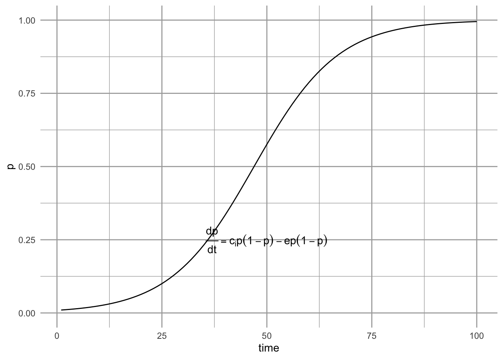
What is the equilibrium for the Hanski mode (eq. Equation 7.9)? We can rearrange this to further simplify solving for \(p^*\). \[ \begin{aligned} \frac{dp}{dt} &= \left(c_i-e \right) p \left(1-p\right) \end{aligned} \tag{7.10}\] This shows us that for any value of \(p\) between zero and one, the sign of the growth rate (positive or negative) is determined by \(c_i\) and \(e\).
If \(c_i>e\), the rate of increase will always be positive, and because occupancy cannot exceed 1.0, the metapopulation will go to full occupancy (\(p^*=1\)), and stay there. This equilibrium will be a stable attractor or stable equilibrium. What happens if for some reason the metapopulation becomes globally extinct, such that \(p=0\), even though \(c_i>e\)? If \(p=0\), then like logistic growth, the metapopulation stops changing and cannot increase. However, the slightest perturbation away from \(p=0\) will lead to a positive growth rate, and increase toward the stable attractor, \(p^*=1\). In this case, we refer to \(p^*=0\) as an unstable equilibrium and a repellor.
Let’s explore the stability of these equilibria by plotting the metapopulation growth rate as a function of \(p\) (Figure 7.8). When we set \(c_i>e\), and examine the slope of that line at \(p^*=1\), we see the slope is negative, indicating a stable equilibrium. At \(p^*=0\) the slope is positive, indicating an unstable equilibrium.
dpdtCS <- expression((ci-e)*p*(1-p))
ci <- 0.15; e <- 0.05
p <- seq(0,1, length=50)
dp.dt <- eval(dpdtCS)
qplot(p, dp.dt, geom="line", ylab="dp/dt")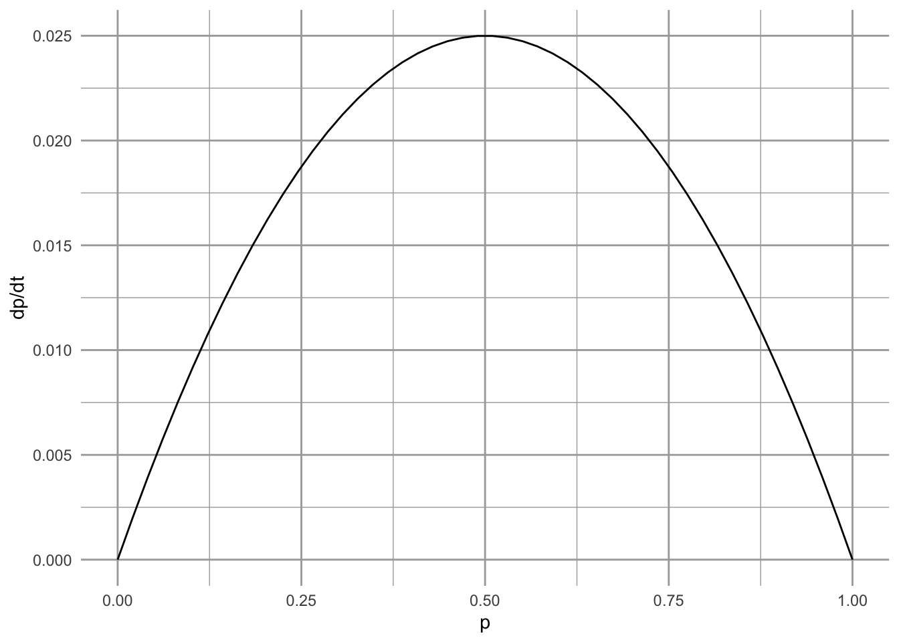
If \(c_i<e\), the rate of increase will always be negative, and because occupancy cannot be less than 0, the metapopulation will become extinct (\(p^*=0\)), and stay there. Thus \(p^*=0\) would be a stable equilibrium or attractor. What is predicted to happen if, for some odd reason this population achieved full occupancy, \(p=1\), even though \(c_i<e\)? In that case, \((1-p)=0\), and the rate of change goes to zero, and the population is predicted to stay there, even though extinction is greater than colonization. How weird is that? Is this fatal flaw in the model, or an interesting prediction resulting from a thorough examination of the model? How relevant is it? How could we evaluate how relevant it is? We will discuss this a little more below, when we discuss the effects of habitat destruction.
What happens when \(c_i=e\)? In that case, \(c_i - e = 0\), and the population stops changing. What is the value of \(p\) when it stops changing? It seems as though it could be any value of \(p\), because if \(c_i-e=0\), the rate change goes to zero. What will happen if the population gets perturbed — will it return to its previous value? Let’s return to question in a bit.
To analyze stability in logistic growth, we examined the slope of the partial derivative at the equilibrium, and we can do that here. We find that the partial derivative of Equation 7.9 with respect to \(p\) is \[ \frac{\partial \dot{p}}{\partial p} = c_i - 2c_i p - e + 2ep \tag{7.11}\] where \(\dot{p}\) is the time derivative Equation 7.9. A little puzzling and rearranging will make things a little simpler. \[ \frac{\partial \dot{p}}{\partial p} = \left(c_i - e\right)\left(1-2p\right) \tag{7.12}\] Recall our rules with regard to stability (Section 6.3.2). If the partial derivative (the slope of the time derivative) is negative at an equilibrium, it means the the growth rate approaches zero following a perturbation, meaning that it is stable. If the partial derivative is positive, it means that the change accelerates away from zero following the perturbation, meaning that the equilibrium is unstable. So, we find the following guidelines:
- \(c_i>e\)
- \(p=1\), \(\partial \dot{p}/ \partial p < 0\), stable equilibrium.
- \(p=0\), \(\partial \dot{p}/ \partial p>0\), unstable equilibrium.
- \(p=1\), \(\partial \dot{p}/ \partial p < 0\), stable equilibrium.
- \(c_i < e\)
- \(p=1\), \(\partial \dot{p}/ \partial p > 0\), unstable equilibrium.
- \(p=0\), \(\partial \dot{p}/ \partial p < 0\), stable equilibrium.
- \(p=1\), \(\partial \dot{p}/ \partial p > 0\), unstable equilibrium.
What if \(c_i=e\)? In that case, both the time derivative (\(d p / dt\)) and the partial derivative (\(\partial \dot{p}/ \partial p\)) are zero for all values of p. Therefore, if the population gets displaced from any arbitrary point, it will remain unchanged, not recover, and will stay displaced. We call this odd state of affairs a neutral equilibrium. We revisit neutral equilibrium when we discuss interspecific competition and predation.
7.2.4 Parallels with Logistic Growth
It may have already occurred to you that the closed spatial population described here sounds a lot like simple logistic growth. A closed population, spatial or not, reproduces in proportion to its density, and is limited by its own density. Here we will make the connection a little more clear. It turns out that a simple rearrangement of Equation 7.4 will provide the explicit connection between logistic growth and the spatial population model with internal colonization (Roughgarden 1998).
Imagine for a moment that you are an avid birder following a population of Song Sparrows in Darrtown, OH, USA (Chapter 6). If Song Sparrows are limited by the number of territories, and males are competing for territories, then you could think about male Song Sparrows as “filling up” some proportion, \(p\), of the available habitat. Each territory is thus like a local population, but where a pair of sparrows either occupies a site, or not, and the proportion of all territories that are occupied is \(p\). You therefore decide that you would like to use Levins’ spatially-implicit metapopulation model instead Equation 7.4. How will you do it? You do it by rescaling logistic growth, \(dN/dt = rN(1-\alpha N)\).
Let us start by defining our logistic model variables in other terms. First we define \(N\) as \[\begin{equation*} N=Hp \end{equation*}\] where \(N\) is the number of males defending territories, \(H\) is the total number of possible territories, and \(p\) is the proportion of possible territories occupied at any one time. At equilibrium, \(N^*=K=Hp^*\), and \(\alpha=1/(Hp^*)\). Recall that for the Levins model, \(p^*=(c_i-e)/c_i\), so therefore, \[\alpha = \frac{c_i}{H\left(c_i - e\right)}\] We now have \(N\), \(\alpha\), and \(K\) in terms of \(p\), \(H\), \(c_i\) and \(e\), so what about \(r\)? Recall that for logistic growth, the per capita growth rate goes to \(r\) as \(N \to 0\) (Chapter 4). For the Levins metapopulation model, the per patch growth rate is \[\begin{align} \frac{1}{p}\frac{dp}{dt}&=c_{i}\left(1-p\right) - e. \end{align}\] As \(p \to 0\) this expression simplifies to \(c_i-e\), which is equivalent to \(r\). Summarizing, then, we have, \[ \begin{gathered} r=c_i-e\\ N=Hp\\ \alpha = \frac{1}{K} = \frac{1}{Hp^*} = \frac{c_i}{H\left(c_i-e\right)} \end{gathered} \tag{7.13}\]
Substituting into logistic growth (\(\dot{N} = rN(1-\alpha N)\)), we now have \[ \begin{aligned} \frac{d(pH)}{dt} &= \left(c_i-e\right)pH\left(1-\frac{c_i}{H\left(c_i-e\right)}Hp\right)\\ &= \left(c_i-e\right)pH - \frac{ c_i-e }{c_i-e}c_ip^2H\\ &= H\left(c_ip\left(1-p\right) - ep \right) \end{aligned} \tag{7.14}\] which is almost the Levins model. If we note that \(H\) is a constant, we realize that we can divide both sides by \(H\), ending up with the Levins model Equation 7.4.
7.2.5 Levins \(vs\). Hanski
Why would we use Levins’ model instead of Hanski’s core-satellite model? To explore this possibility, let’s see how the Hanski model might change gradually into the Levins model. First we define the Hanski model with an extra parameter, \(a\), \[ \frac{dp}{dt} = c_ip\left(1-p\right) - ep\left(1-ap\right). \tag{7.15}\] Under Hanski’s model, \(a=1\) and under Levins’ model \(a=0\). If we solve for the equilibrium, we see that \[ p^*=\frac{c-e}{c-ae} \tag{7.16}\] so that we can derive either result for the two models. In the context of logistic growth, where \(K=Hp^*\), this result Equation 7.16 implies that for the Hanski model, \(K\) fills all available habitat, whereas the Levins model implies that \(K\) fills only a fraction of the total available habitat. That fraction results from the dynamic balance between \(c_i\) and \(e\).
7.2.6 Habitat Destruction
Other researchers have investigated effects of habitat loss on metapopulation dynamics (Kareiva and Wennergren 1995; Nee and May 1992; Tilman and Downing 1994). Taking inspiration from the work of Lande (Lande 1987; Lande 1988), Kareiva and Wennergren (1995) modeled the effect of habitat destruction, \(D\), on overall immigration probability. They incorporated this into Levins’ model as \[ \frac{dp}{dt}=c_ip(1-D-p) - ep \tag{7.17}\] where \(D\) is the amount of habitat destroyed, expressed as a fraction of the original total available habitat.
To turn eq. Equation 7.17 into a function we can use with ode, we have,
lande <- function(t, y, parms) {
with(as.list(c(y,parms)), {
dp <- ci * p * (1-D-p) - e * p
return(list(dp))
}) }
prmsD <- c(ci=0.15, e=0.05, D=.2)
Initial.p <- c(p=0.1)
out.D <- data.frame(ode(y=Initial.p, times=1:100, func=lande, parms=prmsD ))
qplot(x=out.D[,1], y=out.D[,2], geom="line", ylim=c(0,1), ylab="p", xlab="time") +
annotate("text", 25, .75,
label=as.expression(bquote( over(dp,dt)==c[i]*p(1-D-p)-ep)) )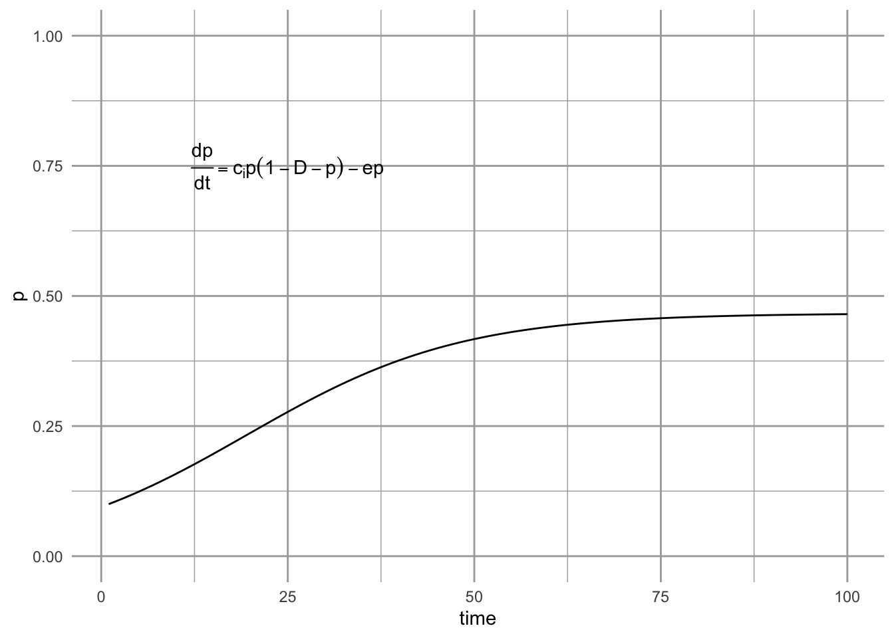
Habitat destruction, \(D\), may vary between 0 (\(=\) Levins model) to complete habitat loss 1.0; obviously the most interesting results will come for intermediate values of \(D\), which we illustrate next.
7.2.7 Illustrating the effects of habitat destruction
We can plot the dynamics for three levels of destruction, starting with none (\(D=0\)). We first set all the parameters, and time.
t <- 1:200
prmsD <- c(ci=0.15, e=0.05, D=0)
Initial.p <- c(p=0.01)
t <- 1:200
D0 <- ode(y=Initial.p, times=t, func=lande, parms=prmsD )
prmsD["D"] <- 0.2
D.2 <- ode(y=Initial.p, times=t, func=lande, parms=prmsD )
prmsD["D"] <- 0.5
D.5 <- ode(y=Initial.p, times=t, func=lande, parms=prmsD )
ps <- rbind.data.frame(D0, D.2, D.5)
ps$D <- as.character( rep(c(0, .2, .5), each=length(t)) )Last, we plot it and add some useful labels.
ggplot(ps, aes(time, p, linetype=D)) + geom_line() 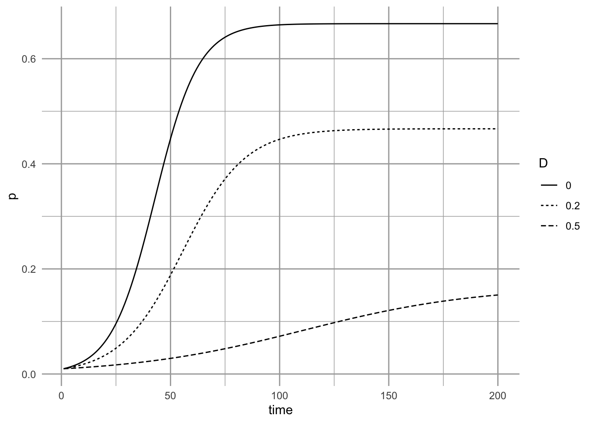
What is the equilibrium under this model? Setting eq. Equation 7.17 to zero, we can then solve for \(p\). \[ \begin{gathered} 0=c_i-c_iD-c_ip - e\\ p^* = \frac{c_i-c_iD - e}{c_i} = 1 - \frac{e}{c_i} - D \end{gathered} \tag{7.18}\] Thus we see that habitat destruction has a simple direct effect on the metapopulation.
7.2.8 Different assumptions lead to different predictions about rates of extinction
Let us return now to the case in the core-satellite model where \(c_i < e\) and \(p=1\). Recall that in this case, \(p=1\) is an unstable equilibrium (\(p=0\) is the stable equilibrium for \(c_i<e\)).
Imagine that at one time, a metapopulation is regulated by the mechanisms in the core-satellite model, including the rescue effect, and \(c_i>e\). We therefore pretend that, the metapopulation occupies virtually every habitable site (let \(p=0.999\)). Now imagine that the environment changes, causing \(c_i<e\). Perhaps climate change enhances extinction rates. All of a sudden, our metapopulation is poised near an unstable equilibrium, with \[p=0.999\quad ; \quad c_i < e\]. What will happen and how might it differ with and without the assumption of the rescue effect?
When \(c_i > e\), we see that \(p^*=1\) is the stable attractor (Figure 7.9). If extinction rates rise so that \(c_i < e\), we see the inevitable march toward extinction predicted by the core-satellite model (Figure 7.9). The decline starts slowly and remains slow, until it begins to gradually accelerate. Do all metapopulation models make the same predictions?
If we try this experiment with the Levins model, we see something very different. The Levins model predicts very rapid decline once \(c_i < e\). Both models predict extinction, but the rescue effect delays the appearance of that extinction. It appears that the rescue effect (which is the difference between the two models) may act a bit like the ``extinction debt’’ (Tilman and Downing 1994) wherein deterministic extinction of a dominant species in a multi-species community is merely delayed, but not postponed indefinitely. Perhaps populations influenced by the rescue effect might be prone to unexpected collapse, if the only stable equilibria are 1 and 0. Thus simple theory can provide interesting insight, resulting in very different predictions for superficially similar processes.
Here we show the unexpected collapse of core populations, starting at or near equilbrium. The first two use the Hanski model, while the third uses Levins. The second and third use \(c_i < e\).
C1 <- ode(y=c(p=0.999), times=t, func=hanski, parms=c(ci=0.2, e=0.01))
C2 <- ode(y=c(p=0.999), times=t, func=hanski, parms=c(ci=0.2, e=0.25))
L2 <- ode(y=c(p=0.999), times=t, func=levins, parms=c(ci=0.2, e=0.25))
coll <- rbind.data.frame(C1, C2, L2)
coll$model <- factor(rep(c("c>e", "c<e", "c<e (Levins)"), each=nrow(L2)),
levels=c("c>e", "c<e", "c<e (Levins)"))
ggplot(coll, aes(time, p, linetype=model)) + geom_line()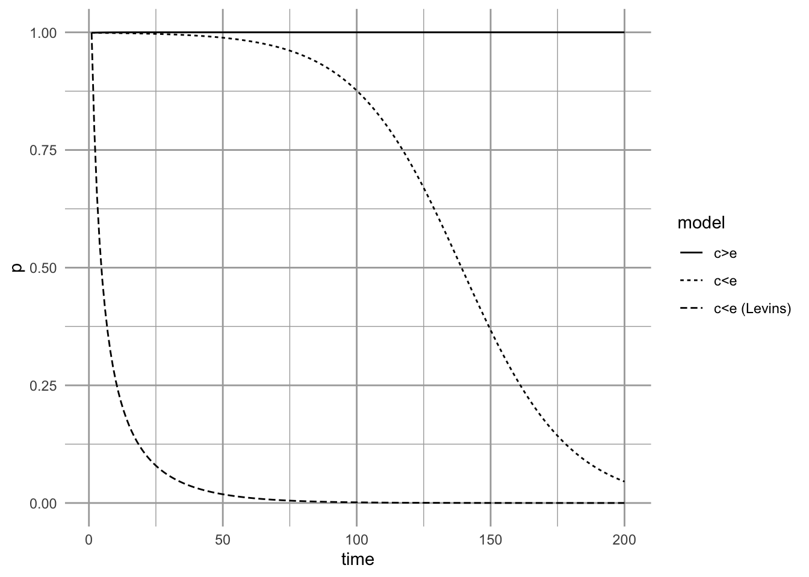
7.3 Hanski’s incidence function
The above models of metapopulation dynamics provide an outline for understanding metapopulation dynamics. However, they do not necessarily provide a direct means to interrogate data or use data illuminate our understanding. One of the main reasons for this is that they do not address two important ecological realities: that patches will be differ in area and thus differ in population sizes, and that they are different distances from each other. MacArthur and Wilson (1963) argued persuasively that extinction risk should be related to area, and that distance from a source should influence the probability of colonization. I. Hanski (1994) provided an approach using incidence functions, which predict the probability of occurrence. They allow us to incorporate area and distance in our model, and uses easily acquired patch occupancy data (presence/absence data) to evaluate metapopulation characteristics.
The incidence of occupancy is determined by colonization and extinction probabilities. We will assume that if a patch \(i\) is empty in year \(t\), it will be recolonized in year \(t+1\) with a probability \(C_i\). This also means it will remain empty with probability of \(1-C_i\). If a patch \(j\) is occupied in year \(t\), it will become extinct in year \(t+1\) with probability \(E_i\). This also means that it will persist with probability \(1-E_i\).
The two states for one patch are illustrated with the code and figure below. Each column of the matrix is the probabilities for one state. Te first column comprises the probabilities of remaining empty or changing from empty to occupied. The second column comprises the probabilities that an occupied patch becomes empty or remains occupied.
C <- .3; E <- .5
M <- matrix(c(1-C, E,
C, 1-E), ncol=2, byrow=TRUE)
colnames(M) <- rownames(M) <- c("empty", "occupied")
M empty occupied
empty 0.7 0.5
occupied 0.3 0.5{
plotmat(M, pos=2) #requires the diagram package
title("The two states of one patch")
}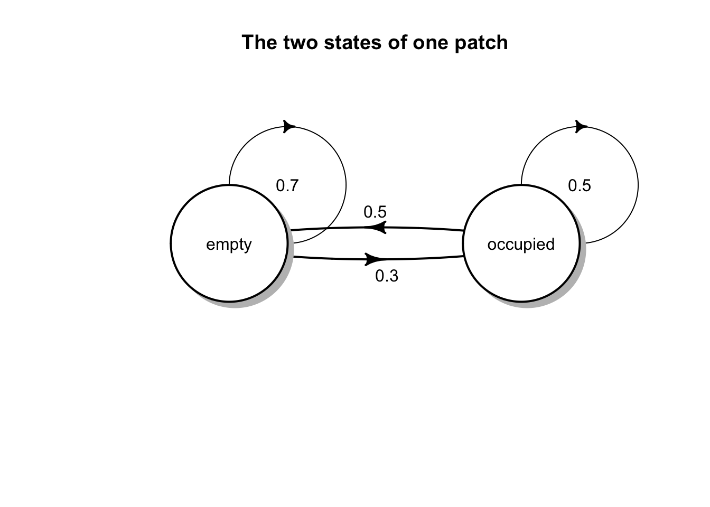
The probability, \(J_i\), that a patch is occupied at any given time is, \[J_i = \frac{C_i}{C_i + E_i}.\]
We can show this by calculating the stable distribution of these states using eigenanalysis in the way we did for demographic matrices.
# J
(J <- C/(C+E))[1] 0.375# The stationary distributions for the two states, empty and occupied
eM <- eigen(M)
eM$vectors[,1]/sum(eM$vectors[,1])[1] 0.625 0.375We see that \(J_i\) is the stable state for being colonized.
Extinction probability, \(E\), is determined by patch area \(A_i\) in our simple model. This is because we will assume that all patches have a similar quality and so support equal densities (individuals per unit area). Larger areas have more individuals and thus have lower risk of extinction. I. Hanski (1994) described this mathematically as \[\begin{align*} E_i = \frac{e}{A_i^x} \quad &\mathrm{if} A_i > e^{1/x}\\ E_i = 1 \quad &\mathrm{if} A_i \le e^{1/x} \end{align*}\] where \(e\) and \(x\) are constants letting \(E_i\) vary for different systems. Parameter \(x\) controls the effect of area, where larger values \(x>1\) mean that large patches have very low extinction risk. Smaller values of \(x\) (\(x<1\)) mean that patches have to become exceedingly larger to appreciably reduce extinction risk. The parameter \(e\) is the area-independent measure of extinction risk, and so is related to intrinsic population dynamics and environmental stochasticity.
We can illustrate extinction probability with toy code.
# Extinction probability
E.p <- function(A, e=0.01, X=1.009){
Ei <- ifelse(A > e^(1/X), e/(A^X), 1)
Ei }
curve(E.p(x), 0, 0.2, ylim=c(0,1))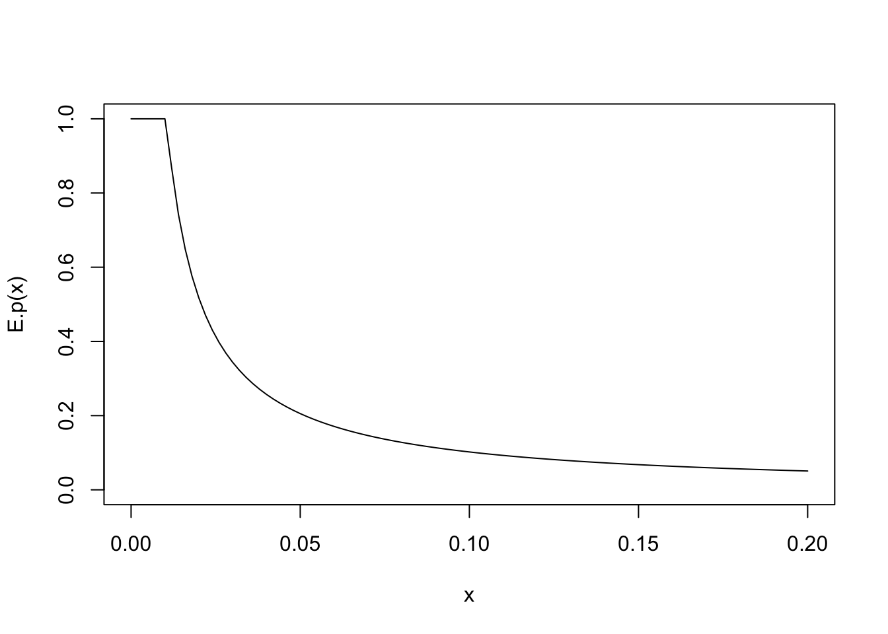
## The ggplot way
# myData <- data.frame( A=c(0, .2) ) # ggplot requires a data frame
# ggplot(data=myData, aes(x=A)) + # set the basic properties of the plot
# # in the stat_function, we indicate the parameters in our equation.
# stat_function(fun=E.p, geom="line",
# args=list(e = 0.01, X = 1.009)) Note that \(A_0 = e^{1/x}\) is the critical patch size where a population is not expected to persist a year.
Colonization probability, \(C_i\), is more complicated. It is a function of the number of arriving migrants, which are themselves a function of distances from other patches and the area (and thus population sizes) of those patches. It is \[C_i = \frac{1}{1+\left(\frac{y^\prime}{S_i}\right)^2}\] where \(y^\prime\) is colonizing ability of the species, and \(S_i\) can be thought of as a measure of isolation of patch \(i\) from the rest of the patches. Formally, this is \[S_i = \sum_{j=1}^n\left(p_j \mathrm{exp}(-\alpha d_{ij}) A_j\right)\] where there are a total \(n\) other patches \(j\) that are habitats, \(p_j\) is an indicator of whether a patch is currently occupied (0,1), \(d_{ij}\) is the distance from patch \(j\) to patch \(i\), \(\alpha\) is the effect of distance, and \(A_j\) is the area of patch \(j\) and thus an index of population size.
We can illustrate extinction probability with toy code.
# Colonization probability from one patch to another, as a function of distance
C.p <- function(d, yprime, alpha, area){
Sij <- exp(-alpha*d ) * area
Ci <- 1/(1 + (yprime/Sij)^2 )
Ci
}
# parameters
yprime <- 2.663; ha <- 0.94; alpha <- 2
km <- seq(0, 1.5, by=0.01)
C <- sapply(km, function(d) {C.p(d=d, yprime=yprime, alpha=alpha, area=ha)})
qplot(km, C, geom="line")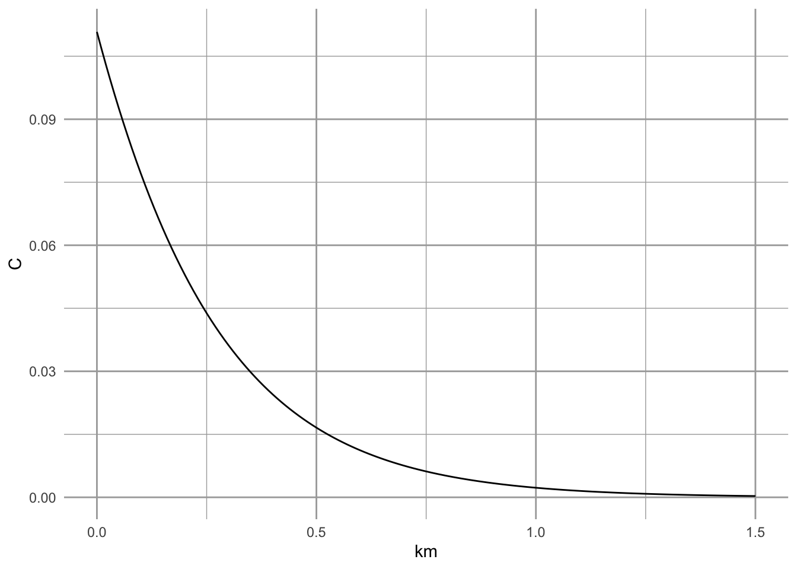
There are additional details about the colonization function that I have buried, but the interested reader could consult sources of these ideas (\relax. I. Hanski 1994; I. Hanski 1994).
Combining \(C_i\) and \(E_i\), we can define the incidence function, \[J_i = \frac{1}{1+ \left(1+\left[\frac{y^\prime}{S_i}\right]^2\right)\frac{e}{A_i^x}}.\]
To use this model, we need the following data for each patch
- areas, \(A_i\), of each patch,
- locations of each patch, from which to calculate the distances between each pair of patches \(i,j\),
- presence or absence of the species in each patch,
- the distance parameter \(\alpha\).
From the distances, \(\alpha\), and presence/absences, we calculate \(S_i\) for each patch. There are a couple of ways to estimate \(\alpha\) but perhaps the best way is to do this using mark-recapture methods, but we will not explain those here. Other parameters, \(e,\,x,\,y^\prime\), are estimated using nonlinear regression methods; we use these below.